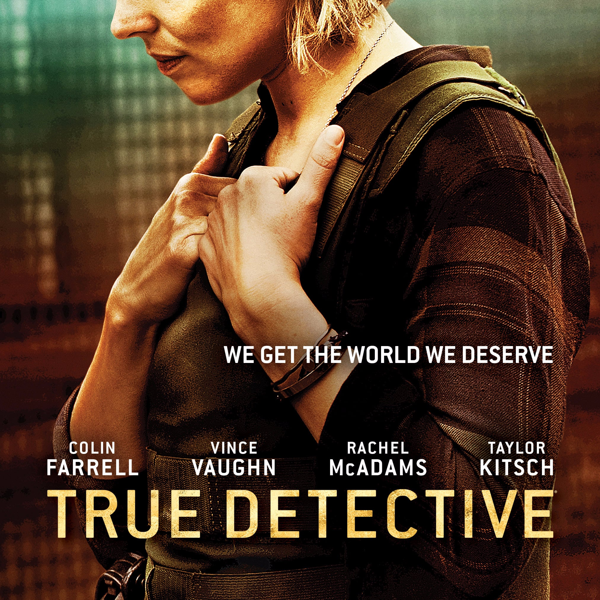
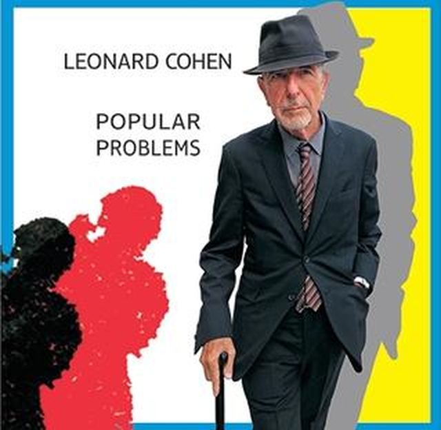
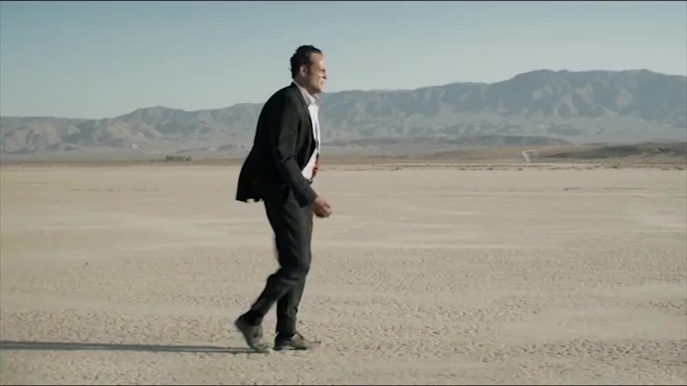

친일파들에게 바치는 듯한 노래 "Nevermind" 가사 해설
게시: 2021-03-11T06:30:18+09:00
제가 미국에 몇 달 장기 출장을 갔을 때, 갔던 동네가 볼 것이 많은 동네도 아니었고 제가 그다지 활달한 성격도 아니어서 결국 저녁이나 주말에 싸구려 호텔방에서 죽어라 TV만 보게 되었습니다. 그때 True Detective라는 HBO 미니시리즈의 시즌2가 진행 중이었습니다. 드라마는 한국 것이나 미국 것이나 공통점이 있더군요. 처음부터 안 보고 중간부터 봐도 대충 줄거리 짐작이 가고, 중간에 좀 빼먹어도 상관이 없으며, 심지어 상당량의 대사를 못 알아먹어도 줄거리 파악에는 별 지장이 없더라는 것이지요. 이게 결코 제 영어 실력이 뛰어나서 그런 것이 아닙니다. 저도 반이나 알아 듣나 싶은 정도의 실력 밖에 안 됩니다. 사람의 언어 소통 중 70% 정도는 말 내용이 아니라 얼굴 표정과 손짓발짓 그리고 목소리 톤 등의 바디랭귀지라는 것을 실감하게 되었습니다.

이 True Detective (참된 형사) 라는 드라마는 제목과 표지 보시면 대충 짐작하시겠지만 범죄 스릴러인데, 출연진은 상당히 호화스럽습니다. 콜린 파렐과 레이철 맥아담스, 테일러 킷쉬, 빈스 본 등이 나옵니다. 저는 나름대로 재미있게 봤는데, 제 심미안이 나쁜 것인지 출연진들의 연기는 호평을 받았으나 이 드라마는 2015년 최악의 TV 드라마로 선정되는 불명예를 안았다고 합니다. 이 드라마를 보면서 참 인상적인 부분 중 하나가 시작할 때 나오는 테마 송이었어요. 딱 들어봐도 레오나드 코헨이 부르는 것이구나 싶었고, 그러니 당연히 레오나드 코헨이 작사작곡한 것입니다. 그 가사는 비교적 잘 들려서 저도 어느 정도 정확하게 알아들었는데, 꽤 인상적인 내용이었어요. 물론 드라마 내용과 딱 일치하는 내용은 아닙니다. 그게 당연한 것이, 이 노래는 2014년에 발간된 코헨의 앨범 'Popular Problems'에 실린 것을 그 다음해인 2015년 드라마에 거의 그대로 쓴 것이거든요.

저는 이 노래의 가사를 들을 때마다, 이건 진짜 미국인들은 노래 속에서나 느낄 수 있을 뿐, 절대 실감하기 어려운 정서라는 생각이 듭니다. 전쟁에서 완패하여 말살당한 나라의 어떤 인물이, 자신을 잡아 적국에게 넘기려는, 이제는 매국노가 된 옛 동료에게 읊는 내용이거든요. 오히려 우리나라처럼 나라가 망해본 적이 있고, 또 독립지사들을 잡아 일본 헌병들에게 넘기던 매국노들이 지금도 옹호받으며 "친일파가 뭘 잘못했는가, 친일파는 그저 열심히 살았을 뿐이다, 친일파 단죄를 하자는 사람들은 종북 빨갱이"라는 평가가 공공연히 나오는 나라의 국민들이 무척 절실하게 들리는 가사입니다. 이 가사에는 여러 군데 매우 인상적인 구절들이 있는데, 아래 부분을 보면 결국 안전하게 빼돌렸다는 주인공의 아내와 아이들은 이미 죽은 것 아닌가 싶어요. 이 세상을 떴으니 원수들로부터는 안전하겠지요. My woman's here My children too Their graves are safe From ghosts like you 또 이 부분도 인상적이더라구요. 하긴 인상적인 구절이 한두군데가 아닙니다. 괜히 코헨이 음유시인이라 불리는 것이 아니지요. You serve them well I'm not surprised You're of their kin You're of their kind 아, 이 드라마가 한국에서 방영될 것 같지는 않으니 그냥 여기서 스포를 하자면 콜린 파렐과 빈스 본 둘 다 각각 결국 피살되버립니다. 레이철 맥아담스는 살아요. 테일러 킷쉬는 어떻게 되었는지 기억이 안나는데, 제가 빼먹고 못 본 회차에서 죽었나봐요.

(빈스 본은 적대 범죄 조직에 의해, 칼에 배를 찔린 채 사막에 버려지는 처형을 당합니다. 뙤약볕이 내리쬐는데 목이 마른 상태에서 피를 흘리면서도 포기하지않고 계속 걷다가 여태까지 자신이 살해했던 많은 사람들과 가족 등의 환영에 시달리가 그만...)
(콜린 파렐은 범죄조직에 고용된, 자동화기와 방탄복으로 무장한 용병들에게 살해됩니다.)
이 매력적인 노래는 아래 유튜브에서 감상하세요. 화면에 친절하게 영어 가사가 다 나오네요.

Nevermind by Leonard Cohen The war was lost The treaty signed I was not caught I crossed the line 전쟁은 끝났고 항복문서에 서명도 끝났어 난 잡히지 않았지 난 선을 넘었거든 I was not caught Though many tried I live among you Well-disguised 난 잡히지 않았어 많은이들이 잡으려 했지만 말이야 난 너희들 속에 살고 있어 신분을 감춘 채 말이야 I had to leave My life behind I dug some graves You'll never find 난 버려야 했지 내 삶을 말이야 난 무덤을 팠고 넌 절대 그걸 못 찾을 거야 The story's told With facts and lies I had a name But never mind 이야기는 알려져 있어 진실과 거짓이 섞여있지 내게도 이름이 있었어 하지만 신경쓰지마 Never mind Never mind The war was lost The treaty signed 신경쓰지마 신경쓰지마 전쟁은 끝났고 항복문서에 서명도 끝났어 There's Truth that lives And Truth that dies I don't know which So never mind 살아남는 진실도 있고 죽어버리는 진실도 있어 어느게 어느것인지 모르겠어 그러니 신경쓰지마 Your victory Was so complete Some among you Thought to keep 너희의 승리는 너무 완벽해서 너희 중 몇몇은 보존을 생각했지 A record of Our little lives The clothes we wore Our spoons our knives 우리 하찮은 일상에 대한 기록을 말이야 우리가 입는 옷이나 스푼 나이프 같은 것들 말이지 The games of luck Our soldiers played The stones we cut The songs we made 우리 병사들이 하던 도박 게임이나 우리가 남긴 조각품 우리가 부르던 노래 같은 것들 Our law of peace Which understands A husband leads A wife commands 우리의 법률에 대해서도 말이지 우리 법은 잘 알고 있다구 주도는 남편이 하지만 명령은 아내가 내린다는 걸 말이야 And all of these Expressions of the Sweet indifference Some called love 그리고 이런 모든 표현들 말이야 어떤이들이 사랑이라고 부르는 달콤한 무심함 같은 것들 The high indifference Some call fate But we had names More intimate 어떤이들이 운명이라고 부르는 고결한 무심함 같은 것도 있구 하지만 우리에겐 더 친숙한 이름들이 있었어 Names so deep And names so true They're blood to me Dust to you 아주 깊은 뜻을 가진 이름들 아주 진실되었던 이름들 그들은 내게는 혈육이었고 너희에겐 티끌만도 못했지 There is no need And this survives There's Truth that lives And Truth that dies 꼭 그럴 필요가 있는 건 아니야 이런 것들이 살아남아야 하는 건 아니라구 살아남는 진실이 있고 죽어버리는 진실도 있으니까 Never mind Never mind The war was lost The treaty signed 신경쓰지마 신경쓰지마 전쟁은 끝났고 항복문서에 서명도 끝났어 There's Truth that lives And Truth that dies I don't know which So never mind 살아남는 진실도 있고 죽어버리는 진실도 있어 어느게 어느것인지 모르겠어 그러니 신경쓰지마 I could not kill The way you kill I could not hate I tried, I failed 난 죽일 수가 없었어 너희가 죽이는 방식대로는 말이야 난 증오할 수도 없더군 해봤는데, 안 되더라구 You turned me in At least you tried You side with them whom You despise 넌 나를 잡아넘기려고 했지 최소한 그러려고 노력은 했쟎아 넌 그들과 한편이 되었어 니가 그토록 멸시하던 인간들과 말이야 This was your heart This swarm of flies This was once your mouth This bowl of lies 이게 너의 심장이었어 이 파리떼가 말이야 이건 한때 너의 입이었지 이 거짓말 한 대접이 말이야 You serve them well I'm not surprised You're of their kin You're of their kind 넌 그들을 아주 잘 모셨지 별로 놀랍지도 않아 넌 그들과 한통속이고 넌 그들과 같은 부류거든 Never mind Never mind I had to leave my Life behind 신경쓰지마 신경쓰지마 난 버려야했어 내 인생을 말이야 The story's told With facts and lies You own the world So never mind 이야기는 알려져 있어 진실과 거짓이 섞여있지 이제 세상은 네 것이쟎아 그러니 신경쓰지마 Never mind Never mind I live the life I left behind 신경쓰지마 신경쓰지마 나도 살고 있어 내가 버리고 온 인생을 말이야 I live it full I live it wide Through layers of time You can't divide 난 제대로 살고있어 난 폭넓게 살고있지 네가 나눌 수 없는 여러 겹의 시간에 걸쳐서 말이야 My woman's here My children too Their graves are safe From ghosts like you 내 여자는 여기 있어 내 아이들도 말이지 그들의 무덤은 안전해 너같은 귀신들로부터 말이지 In places deep With roots entwined I live the life I left behind 아주 깊은 곳에 있어 나무뿌리가 엉켜있는 곳에 말이야 나도 살고 있어 내가 버리고 온 인생을 말이야 The war was lost The treaty signed I was not caught Across the line 전쟁은 끝났고 항복문서에 서명도 끝났어 난 잡히지 않았지 난 선을 넘었거든 I was not caught Tho many tried I live among you Well-disguised 난 잡히지 않았어 많은이들이 잡으려 했지만 말이야 난 너희들 속에 살고 있어 신분을 감춘 채 말이야